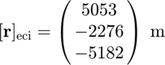
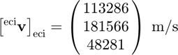
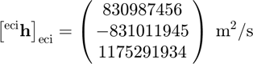
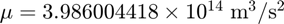

rvh2e
Eccentricity from position, velocity, and specific angular momentum.
Contents
Syntax
e = rvh2e(r,v,h,mu)
Inputs
| Variable | Symbol | Description | Format | Units |
| r | position expressed in an inertial frame | 3×1 double |
m | |
| v | inertial velocity expressed in an inertial frame | 3×1 double |
m/s | |
| h | inertial specific angular momentum expressed in an inertial frame | 3×1 double |
m²/s | |
| mu | standard gravitational parameter | 1×1 double |
m³/s² |
Outputs
| Variable | Symbol | Description | Format | Units |
| e | eccentricity | 1×1 double |
- |
Example
Consider the following position, ECI velocity, and ECI specific angular momentum, all expressed in the ECI frame.



Defining these quantities in MATLAB,
r = [ 5053;
-2276;
-5182];
v = [113286;
181566;
48281];
h = [ 830987456;
-831011945;
1175291934];
Additionally, let the standard gravitational parameter be .
mu = 3.986004418e14;
Computing the eccentricity,
e = rvh2e(r,v,h,mu)
e =
0.1000